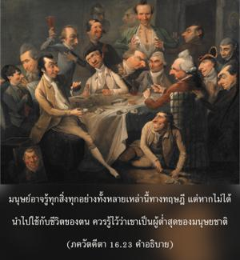
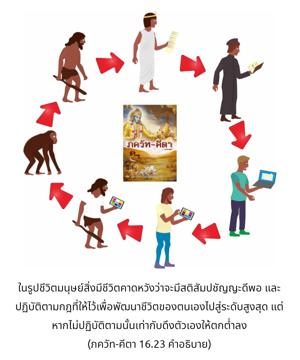

ผู้ที่ยกเลิกคำสั่งสอนของพระคัมภีร์ และทำตามอำเภอใจของตนเองจะไม่บรรลุถึงความสมบูรณ์ ความสุข หรือจุดหมายปลายทางสูงสุด


ดังที่ได้อธิบายไว้ก่อนหน้านี้ว่า ศาสฺตฺร-วิธิ หรือทิศทางของ ศาสฺตฺร ได้ให้ไว้แก่วรรณะต่างๆ และระดับต่างๆ ของสังคมมนุษย์ คาดว่าทุกคนปฏิบัติตามกฎเกณฑ์เหล่านี้ หากไม่ปฏิบัติตาม และทำตามอำเภอใจ ตามราคะ ความโลภ และความปรารถนาของตนเอง จะไม่มีวันสมบูรณ์ในชีวิต อีกนัยหนึ่ง มนุษย์อาจรู้ทุกสิ่งทุกอย่างทั้งหลายเหล่านี้ทางทฤษฎี แต่หากไม่ได้นำไปใช้กับชีวิตของตน ควรรู้ไว้ว่าเขาเป็นผู้ต่ำสุดของมนุษยชาติ ในรูปชีวิตมนุษย์สิ่งมีชีวิตคาดหวังว่าจะมีสติสัมปชัญญะดีพอ และปฏิบัติตามกฎที่ให้ไว้เพื่อพัฒนาชีวิตของตนเองไปสู่ระดับสูงสุด แต่หากไม่ปฏิบัติตามนั้น เท่ากับดึงตัวเองให้ตกต่ำลง ถ้าปฏิบัติตามกฎเกณฑ์ และตามหลักศีลธรรม แต่ในที่สุดมาไม่ถึงระดับแห่งความเข้าใจองค์ภควานฺ ก็เท่ากับความรู้ทั้งหมดสูญเปล่า และหากยอมรับความมีอยู่ขององค์ภควานฺ แต่ไม่ปฏิบัติในการรับใช้พระองค์ความพยายามก็สูญเปล่า ดังนั้น เราควรค่อยๆ พัฒนาตนเองมาสู่ระดับแห่งกฺฤษฺณจิตสำนึก และอุทิศตนเสียสละรับใช้ ตรงนี้ที่จะสามารถบรรลุถึงระดับแห่งความสมบูรณ์สูงสุด ไม่ใช่การไปพัฒนาอย่างอื่น
คำว่า กาม-การตห์ สำคัญมาก บุคคลทั้งๆ ที่รู้ยังไปละเมิดกฎ คลุกคลีอยู่ในราคะทั้งๆ ที่รู้ และรู้ว่าสิ่งนี้ต้องห้ามแต่ก็ยังทำ เช่นนี้เรียกว่า ทำตามอำเภอใจ หากรู้ว่าสิ่งนี้ควรทำแต่ไม่กระทำก็เรียกว่า ทำตามอำเภอใจ บุคคลเหล่านี้จะถูกพระองค์ลงโทษในที่สุด และจะไม่สามารถบรรลุถึงความสมบูรณ์ ซึ่งหมายไว้สำหรับชีวิตมนุษย์ ชีวิตมนุษย์หมายไว้โดยเฉพาะเพื่อทำให้ความเป็นอยู่ของตนเองบริสุทธิ์ หากไม่ปฏิบัติตามกฎเกณฑ์ ก็จะไม่สามารถทำให้ตนเองบริสุทธิ์ และไม่สามารถบรรลุถึงระดับแห่งความสุขที่แท้จริงได้